Tokyo, Mt. Fuji & Hakone (Wed Nov 25 – Wed Dec 2, 2026)
Jet-lag staircase for Chicago travelers: unhurried mornings, weekday mountains & coasters, protected afternoon recharge breaks, and confirmed cultural bookings.
2 Adults · Strictly No Pork & No Alcohol
All Currently Open Activities & Hotels Booked ✅
Protected 2–4 PM Recharge Daily
📊 8-Day Trip at a Glance
| Day | Scheduled Flow & Confirmed Bookings | Weather & Visibility Last Updated: Nov 23, 2026 |
|---|---|---|
|
Wed Nov 25
Arrival · Shibuya
|
Lands Haneda T3 (17:45) → ✅ $55 Agoda Private Transfer (19:30) → ✅ JR-East Hotel Mets Shibuya (Nights 1–5) → LIFE Supermarket (20:45) | 🌤️ 59°F / 46°F · 0" rain (0% PM) · Clear, dry night walk (84 mi vis, 2 mph wind) |
|
Thu Nov 26
Mt. Takao & Shinjuku
|
09:30 Hotel → ~10:45–11:00 Takaosanguchi → Cable Car → Trail 4 Bridge & Summit → Trail 1 / Yakuo-in → Lunch → Shinjuku · Hotel Nap Optional | Takao ~9–11°C (48–52°F), mostly dry, light wind. Fuji view uncertain. |
|
Fri Nov 27
Mt. Fuji & Fuji-Q
|
Original: Leave Hotel 07:25 → ✅ Booked 08:15 Highway Coach (1151) → Mt. Fuji Ropeway → ~12:05 Taxi to Fuji-Q (✅ 1-Day Pass Booked) → ✅ 13:30–14:00 Zokkon Priority (2 Tickets) → Lunch & Optional Rides → 16:00 Bus Stop → ✅ 16:18 Return Coach (1118). See the Alternative tab for an 08:00 wake, 09:30 train, and no lake or ropeway. | ☀️ 61°F / 34°F · 0" rain · 10/10 (96%) AM / 9/10 (85%) PM Fuji vis, 0% clouds & 2 mph wind |
|
Sat Nov 28
Yanaka Old Town, 12:00 Sushi & Shibuya
|
Nezu Torii & Yanaka Ginza (09:30–11:20) → 10-min GO Taxi / 20-min Subway → ✅ 12:00 Sushi Class (217172P1) → 14:00–16:15 Hotel Nap at JR Mets → ✅ 16:40 SHIBUYA SKY → Shibuya Crossing → Ebisu | 🌦️→☀️ 64°F / 54°F · 0.16" AM rain (ends ~10:00); clears to 96% Fuji vis & open roof for 16:40 SHIBUYA SKY (5 mph wind) |
|
Sun Nov 29
Harajuku, Kimono & Tea, Asakusa Cafe, Sumo
|
Meiji Jingu (10:00) → Takeshita Crepes & Omotesando (12:25 Ginza Line) → ✅ 13:30 Maikoya Kimono & Tea (51440P108) → 15:00–16:00 Senso-ji & Kimono Change → 16:00–16:45 Asakusa Cafe Break (🌟 Optional: Rikugien) → ✅ 17:30 Shinjuku Sumo (5610033P1) | ☀️ 63°F / 48°F · 0" rain (10%) · Pure sun (95+ mi vis); breezy PM (12–14 mph, gusts 33 mph) |
|
Mon Nov 30
Hakone Loop & Mizunoto
|
07:30 Wake + 60-Min Routine → 08:30 JR Mets Check-Out & $6 Taxi Bag Drop at lyf Shibuya → ✅ 10:00 Romancecar (#00058) → Hakone Loop → Cedar Trail (🌟 Optional: Narukawa Lounge / Open-Air Museum) → ✅ 16:00 Mizunoto (14:00–17:00 Shuttle) | ☀️ 61°F / 43°F (Owakudani ~42°F) · 0" rain (10%) · 10/10 (100%) Fuji vis & 2–7 mph wind |
|
Tue Dec 1
Bullet Train, Ginza Tempura / Ramen, Samurai, Kappabashi & Shibuya
|
Morning Balcony Onsen & 09:00 Check-Out → ✅ Booked 11:14 Kodama 808 Bullet Train (Res #2000 · Car 12 Seats 12-D/E) → 11:55 Ginza Tempura (Itsuki 3.47★) / Ramen Street → 12:55 12-Min ($14) Taxi → ✅ Booked 13:30 Samurai Museum (51440P80) → 14:35 Kappabashi → 15:35 Free Time → Wagyu / Unagi & Lights | ☀️ 66°F / 41°F · 0" rain (10%) · 10/10 (100%) Shinkansen Fuji view, 0% clouds & 2 mph wind |
|
Wed Dec 2
Sleep In, Isetan, Shinjuku Gyoen & 2:00 PM Transfer
|
09:00 Sleep In → 10:15 lyf Check-Out & Free Bag Hold → 10:50 Isetan Depachika → 11:30–12:40 Shinjuku Gyoen Picnic → 13:20 Back at lyf (40m Buffer) → ✅ 14:00 Agoda Private Transfer ($55) → DL276 16:50 HND T3 | ☀️ 68°F / 45°F · 0" rain (10%) · Pure sun, 0% clouds & 2 mph wind for Gyoen |
🗓️ Day-by-Day Photos & Timed Schedule
Wed Nov 25
Arrival in Tokyo & Check-In at JR-East Hotel Mets Shibuya
📍 Haneda Airport → Shibuya (JR-East Hotel Mets Shibuya)
Land at Haneda Terminal 3 at 17:45, take your booked $55 Agoda Private Transfer door-to-door to JR-East Hotel Mets Shibuya (Nights 1–5), grab a quick 10-minute dinner and morning breakfast staples at LIFE Supermarket 2 minutes away, and get a full night's sleep by 21:30.
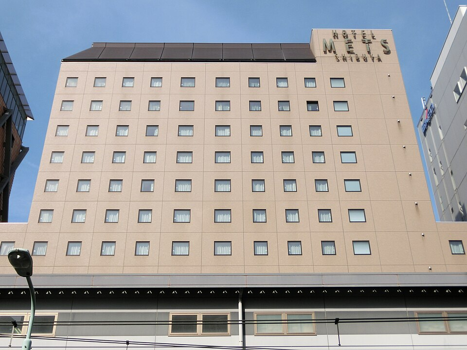
JR-East Hotel Mets Shibuya
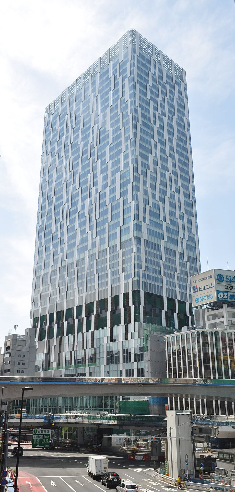
Shibuya Stream Riverwalk
Timed Schedule
-
17:45 Land at Haneda Airport (Terminal 3) ☀️ DaytimeGoogle Maps — type or tap: Haneda Airport Terminal 3Clear immigration and customs (takes ~60–75 minutes) and pick up small-bill Yen cash in the 2F Arrival Lobby before meeting your driver.📋 Required: ✅ Visit Japan Web QRs Completed! Open '📲 Offline QR Wallet' below (or your '🇯🇵 Japan QR' Photos album), keep physical passports out, and turn Data Roaming ON (Xfinity 10GB 5G included at $0; wife's T-Mobile $50 / 15GB pass).
-
19:30 ✅ Booked: Agoda Private Airport Transfer (Haneda T3 → JR-East Hotel Mets Shibuya, $55) + Hotel Check-In (Nights 1–5) ☕ Dedicated RestGoogle Maps — type or tap: JR-East Hotel Mets ShibuyaRelax on a 25-minute door-to-door ride straight to JR-East Hotel Mets Shibuya with zero train transfers after your 14-hour flight. (💡 Optional In-Car Task—Only If Buying $35+ Take-Home Souvenirs for the US: scan your new passport landing sticker under 'Tax-Free Shopping' in Visit Japan Web.)📋 Required: ✅ Both Transfer ($55 on Agoda, flight-tracked) AND Hotel ($1,213 w/ tax for Nights 1–5, Nov 25–30: 'Single for 2 People - Non-Smoking Residential Style' — renovated May 2025 with in-room microwave, 2-door freezer-fridge & rain-shower booth) are Booked & Paid!
-
20:45 ⭐ Arrival Night Quick Grab-and-Go Dinner & Morning Stock-Up: LIFE Supermarket (2-Min Walk) + 1F 7-Eleven 🏮 Sunset & NightGoogle Maps — type or tap: LIFE Shibuya Higashi ライフ渋谷東店 · Gyumon Halal Yakiniku Shibuya · KINKA Sushi Bar Izakaya ShibuyaAfter ~18–20 hours of travel from Chicago, skip a long sit-down restaurant tonight—grab fresh late-night markdown sushi/tempura and light morning breakfast staples (English muffins, cream cheese, plain Greek yogurt, fruit, boiled eggs) to eat comfortably in your room before sleeping by 21:30.🍽️ Decided Halal / Seafood Picks (Here): 🍙 ⭐ #1 Recommended Tonight: LIFE Supermarket 30–50% off fresh sushi/tempura trays (2-min walk) + 1F 7-Eleven Tamago Sando & Red-Salmon Onigiri. 🌟 Second-Wind Sit-Down Backups (Only If Wide Awake; Otherwise Scheduled on Days 3, 4 & 7): Gyumon Halal A5 Wagyu (3-min walk, 3.10★, open till 23:00) or KINKA Sushi (8-min walk, 3.46★, open till 23:00).
Thu Nov 26
Mt. Takao Summit, Hotel Break & Shinjuku Evening
📍 West Corridor: Shibuya / Shinjuku ↔ Mt. Takao
Summit via popular Trail 1 → sit-down lunch → full one-hour hotel break → 2–3 hours in Shinjuku including dinner. Times are estimates; keep the break and shift the evening later if needed.
Today’s route · all times JST
-
09:30 → ~11:05Hotel → TakaosanguchiGoogle Maps — type or tap: Takaosanguchi Station · JR Shibuya Station New South GateWalk to JR Shibuya New South Gate; take Yamanote toward Shinjuku / Ikebukuro, then follow Keio Line signs. Take a train marked 高尾山口, or follow Maps for a transfer. Allow 75–95 minutes door to station; check live departures and platform signs.
-
~11:05–11:45Walk to cable car → ride upGoogle Maps — type or tap: Kiyotaki Station Mount TakaoWalk about 5 minutes from Takaosanguchi to Kiyotaki. Take the cable car (ケーブルカー): 6-minute ride, normally every 15 minutes, plus the queue; ¥980 round trip per adult. Each person can tap a Suica. Check trail notices and ask staff about current wildlife warnings before starting.
-
~11:45–13:25Trail 1 → temple → summitGoogle Maps — type or tap: Takaosan Yakuo-in Temple · Mount Takao Summit 高尾山山頂Follow Trail 1 / 1号路 signs, not Maps road directions. At the fork take Onna-zaka / 女坂 for the gentler slope. The busy main path is mostly paved but still has slopes and temple stairs. Allow 60–75 minutes up with a temple stop, then about 25 minutes at the summit.Stay together and on the main route in daylight. Bears inhabit the area; one was photographed near Trail 1 at night in August, not a current sighting. No day-of all-clear was verified. Follow staff advice and avoid quieter trails beyond the summit.
-
~13:25–15:00Trail 1 back → cable car downGoogle Maps — type or tap: Takaosan Cable Car Station 高尾山駅Follow Trail 1 back to the upper cable station; allow about an hour walking, then time for the queue and ride down. Finish the descent in daylight; reassess with staff if delayed. Trail 6 is uphill-only through Dec 6.
-
~15:00–16:00Sit-down lunch near the stationGoogle Maps — type or tap: Biwaya Takao 2470 Takaomachi · むぎとろ つたや 高尾山Biwaya: soba and chicken karaage; ask about sharing. Walk in—lunch reservations are not accepted. Tsutaya: chicken soba; cash only, may close at 16:00 on winter weekdays; call 042-661-2427 to check hours or reservations. Ask about pork or alcohol in sauces if relevant.
-
~16:00–17:45Train back to the hotelGoogle Maps — type or tap: JR-East Hotel Mets Shibuya · Takaosanguchi StationWalk about 3 minutes to Takaosanguchi Station; take Keio toward Shinjuku, then JR Yamanote toward Shibuya / Ebisu. Allow 75–95 minutes station to hotel including typical waits; check live Maps. A 16:26 departure is one possible example.
-
~17:50–18:50Full one-hour hotel breakRest in the room for a full hour; if the hike or lunch runs late, shift the break and evening rather than cutting it short.
-
~18:50–19:25Hotel → ShinjukuGoogle Maps — type or tap: Omoide Yokocho ShinjukuWalk to JR Shibuya; take Yamanote toward Shinjuku. Follow West Exit signs to Omoide Yokocho. Allow 25–40 minutes room to first stop.
-
~19:25–22:00Shinjuku stroll + dinnerGoogle Maps — type or tap: Omoide Yokocho Shinjuku · Cross Shinjuku Vision · Godzilla Head Shinjuku · Mazulu Shinjuku 2-1-2 Kabukicho · Wagyu Steak Hamburger & Ramen Shinjuku 7-11-2Explore before and after dinner. Start dinner at least 4 hours after lunch ends—20:00 if lunch finishes at 16:00. Mazulu’s beef noodles: operator says halal-certified, no reservations, open until 23:00 unless sold out. Wagyu Steak: pork- and alcohol-free per operator, not officially halal-certified; reservations recommended, check cancellation fees. See food details.
-
~22:00–22:30Return to hotelGoogle Maps — type or tap: JR-East Hotel Mets ShibuyaTake JR Yamanote toward Shibuya / Ebisu and walk back. Friday wake-up is 06:15 for the original 08:15 coach plan, or 08:00 for the train alternative.Autumn cable queues can be long: a holiday wait reached 70 minutes. If delays add 30–60 minutes, expect a later dinner and roughly 23:00–23:30 hotel return. These are estimates, not deadlines.
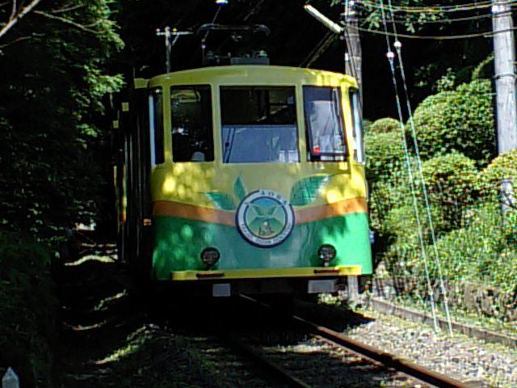
Mt. Takao Cable Car
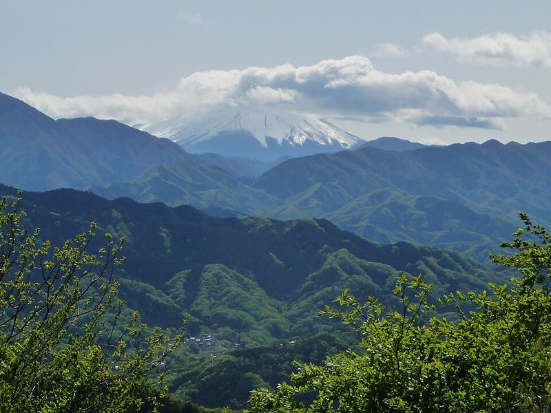
Mt. Fuji from Mt. Takao
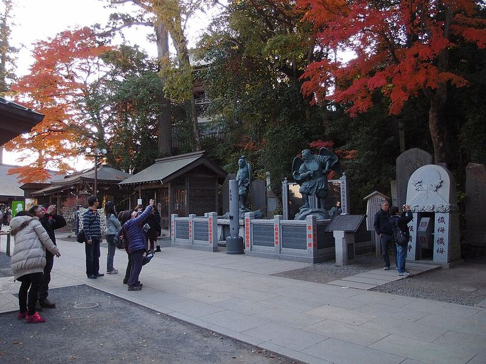
Mt. Takao Autumn Maples
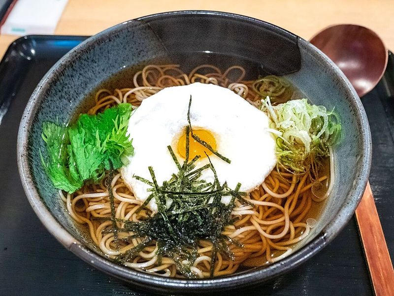
Summit Buckwheat Soba
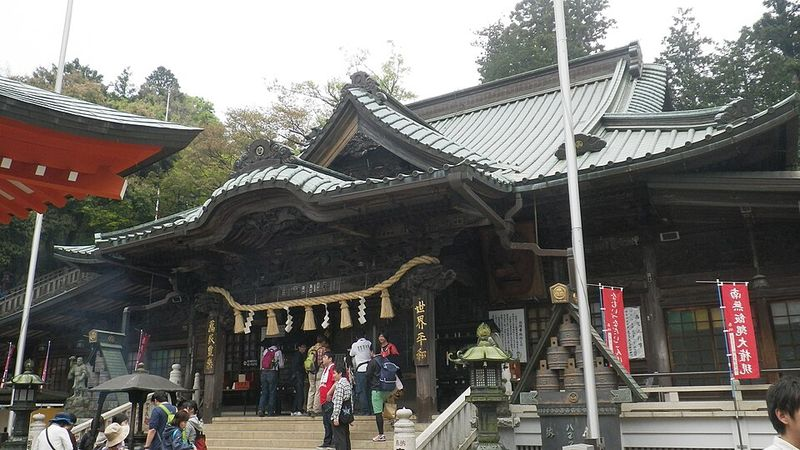
Yakuo-in Mountain Temple
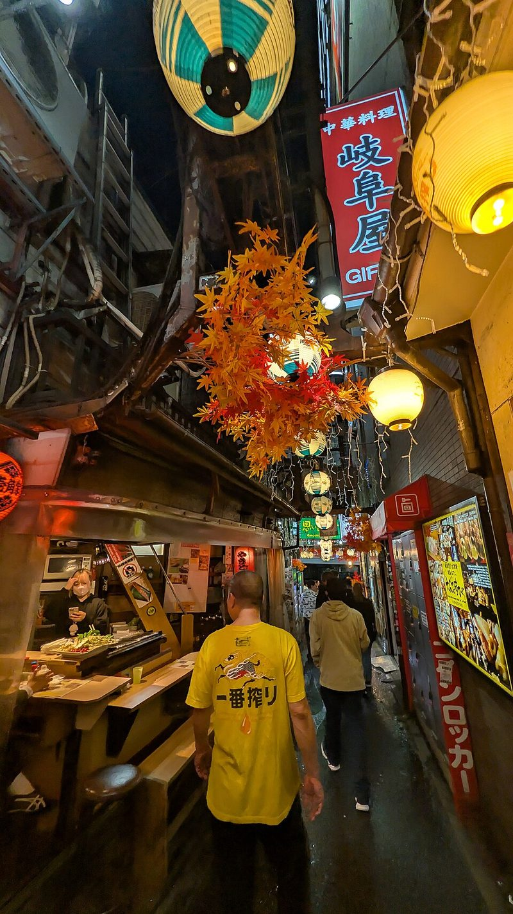
Omoide Yokocho Lantern Alley
Fri Nov 27
Lake Kawaguchiko & Fuji-Q: Choose Your Friday Plan
📍 Mt. Fuji Corridor: Lake Kawaguchiko & Fuji-Q Highland
FRI 07:50 JSTDecide and cancel the unused outbound
Both outbound options are booked. 07:50 is your safety target, not the official deadline. Set an alarm: to use the original bus, you need to be up earlier and leave the hotel around 07:25. If you are still at the hotel at 07:50, choose the train, cancel the bus, then rest until 08:00 if you wish.
Taking the train? Cancel the 08:15 outbound bus. The Shinjuku–Fuji Five Lakes route's cancellation fee from the day before travel is 50% of the outbound ticket price; the exact yen amount depends on your ticket. Credit-card online refunds close at 08:05. If the legs are in one round-trip booking, check the displayed refund and make sure only the outbound is canceled; round-trip fare adjustments can change the refund. Open bus reservation · Route refund rules
Taking the bus? Cancel the 09:30 Kaiji e-tickets. JR's reservation guide lists a ¥320 fee per reserved seat after 21:00 the day before: for two, an estimated ¥640 penalty and ¥1,400 refund from the ¥2,040 paid. Confirm the amount on your booking before submitting; the full guide could not be opened for verification. The ticketless refund cutoff is the scheduled 09:30 departure, but use the 07:50 target. Open JR reservation · JR ticketless deadline
Keep the booked 16:18 return bus either way. Check the cancellation confirmation before closing the page.
🎢 Fuji-Q Ride Cheat Sheet (Launches & Varied Courses First; Other Rides Optional)
| Rank & Ride | Match | Loops & Restraint | Day-Of Plan | Why It Fits (or Doesn't Fit) Our Vibe |
|---|---|---|---|---|
| #1. Zokkon (2023) Motorbike Multi-Launch Coaster |
Best Fit · Ride Once | 0 Loops · Motorbike Lap Seat (No Shoulder Harness) | ✅ Booked 13:30–14:00 · 2 Priority Tickets | Built by Intamin (the exact engineering firm behind Hagrid's Motorbike at Universal Orlando!). Features 4 separate linear-motor launches, a switch-track backwards launch inside an LED tunnel, sweeping banked turns facing Mt. Fuji, and butter-smooth track with zero ear-banging. |
| #2. Fujiyama 259-Ft / 81 mph Hypercoaster |
Optional · Big Drop & Hills | 0 Loops · Lap-Bar Only (No Shoulder Harness) | Decide at the Park · No Priority Booking | A traditional lift-hill coaster with a 230-ft drop, hills, sweeping turns, and fast low sections; no launch or inversions. Broadly closer to Raging Bull than Lightning Rod's terrain-driven course. Not a must-do just because it has no loops; follow the posted riding posture instructions. |
| #3. Fuji Airways 4D Suspended Flight Theater |
Scenic Simulator · Not a Coaster | 0 Loops · Suspended Soarin'-Style Seat | Not Available for Our Noon Arrival · Morning Until 11:15 | Soarin'-style scenic flight simulator around Mt. Fuji. The official schedule currently shares the theater with Attack on Titan, which starts at 11:30. Do not plan Fuji Airways after lunch; check day-of schedules. Simulators can cause motion sickness. |
| Afternoon Option: Attack on Titan THE RIDE Action Flight Simulator |
Themed Action · Not Kiddish / Not a Coaster | Screen-Based Motion · Simulated Flying & Turns | Optional Regular Queue · From 11:30; Confirm Day-Of | Join an anime battle on a motion flight simulator: the closest afternoon option here to Universal-style screen-based action. Contains violent imagery and can cause motion sickness. Check the queue before committing. |
| Afternoon Option: Despair Fortress Impossible Games |
Adult-Friendly Challenge · Not a Ride | Physical & Mental Games · Groups of 1–3 | Optional Earlier in Afternoon · 30+ Minutes Plus Queue | Work together through physical and mental challenges. A different kind of fun, not a cinematic dark ride or coaster. Leave enough time for the experience and the walk to your 16:00 bus-stop target. |
| #4. Tondemina / Sky Cycle Bonus Flat & View Rides |
7.5/10 · Bonus Standby | 0 Loops · Pendulum / Elevated Pedal Track | Optional Standby ($0 on 1-Day Pass) | Tondemina is a giant 137-ft swinging pendulum with huge zero-G airtime facing Mt. Fuji (no inversions); Sky Cycle / Shining Flower Ferris Wheel offer relaxed elevated Mt. Fuji views if you want a breather. |
| #5. Takabisha Launch + 121° Beyond-Vertical Drop |
6/10 · Mixed | 7 Inversions · Over-the-Shoulder Harness | Low Priority · No Booking | First half is awesome: pitch-black drop into a 0–62 mph linear launch out of a tunnel. Second half has a catch: 90° vertical lift, 121° drop, and 7 inversions where the shoulder harness can rattle your ears left and right. |
| #6. Eejanaika 4D Rotating-Seat Coaster |
0/10 · HARD SKIP | 14 Inversions · Heavy Vest & Shoulder Restraint | 🚫 DO NOT RIDE | Rotating seats and repeated upside-down motion make this a poor match for your preference for launches and varied courses without repeated flips. Individual comfort varies; loops alone do not determine whether a ride causes headaches. |
Sat Nov 28
Yanaka Ginza Old Town & Nezu Torii Tunnel, 12:00 Asakusa Sushi Class, Hotel Nap, Sunset SHIBUYA SKY & Ebisu
📍 Northeast Morning (Nezu & Yanaka Ginza → 12:00 Asakusa Sushi) → Direct Ginza Line to JR Mets Shibuya & Ebisu
Walk Nezu Shrine's vermilion torii tunnel and Yanaka Ginza's preserved pre-war wooden street in the morning, take a 10-minute taxi to Asakusa for your 12:00 PM Hands-On Sushi-Making Lunch Class, ride the direct Ginza Line back to JR Mets Shibuya for an afternoon nap, and catch sunset and the neon skyline from the 47-story SHIBUYA SKY rooftop at 16:40 before Ebisu chicken ramen.
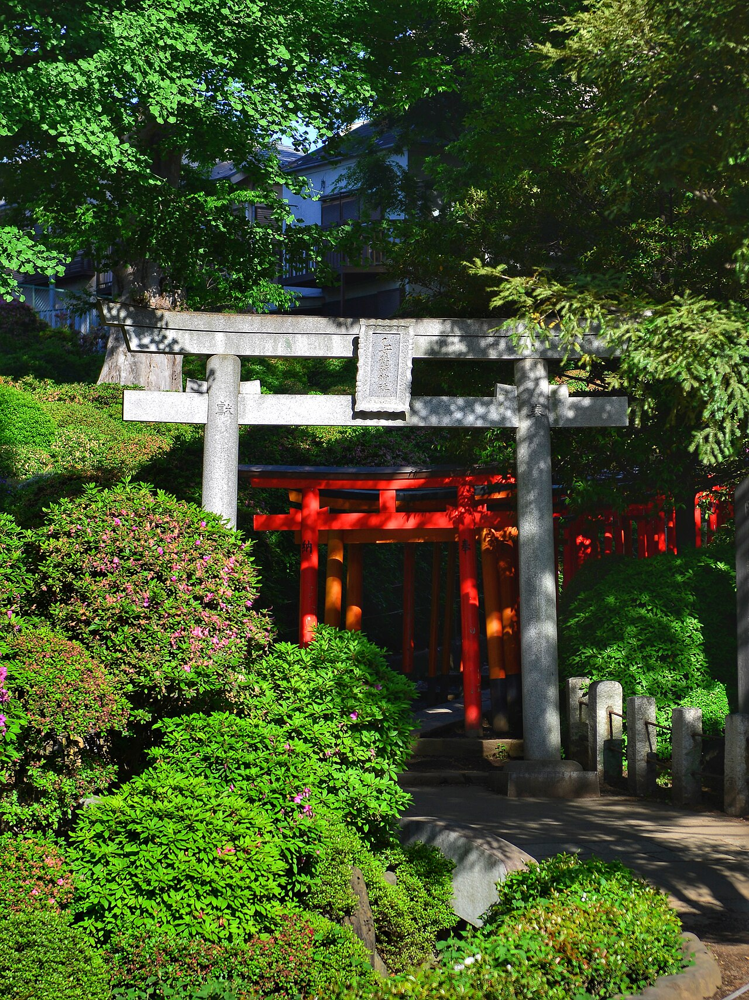
Nezu Shrine Torii Tunnel
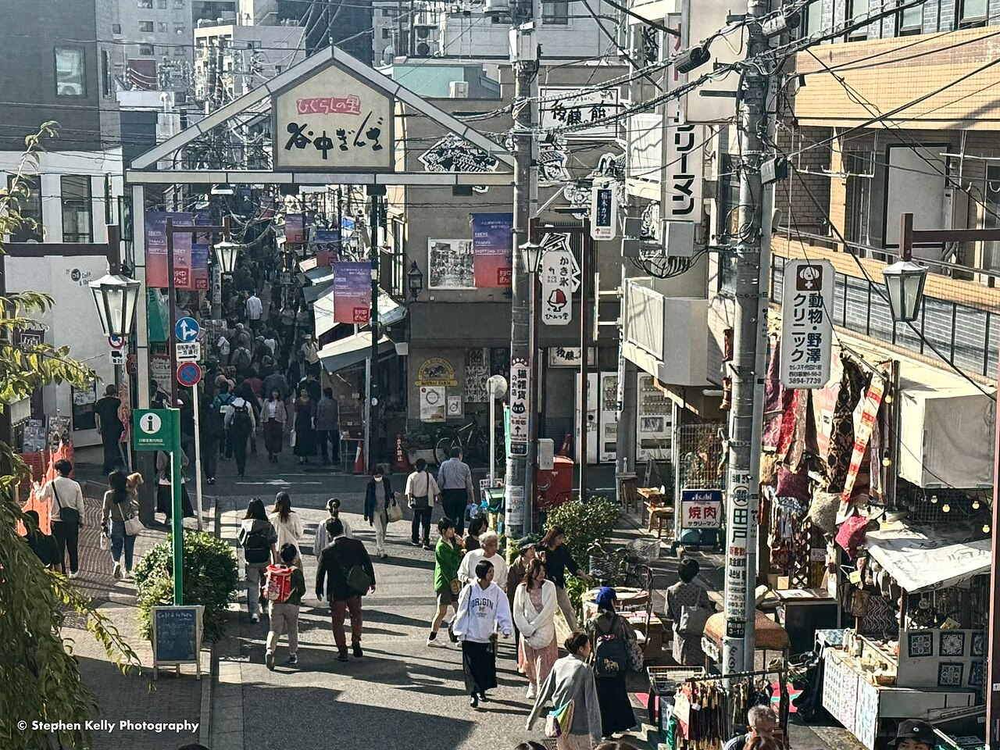
Yanaka Ginza Old Town
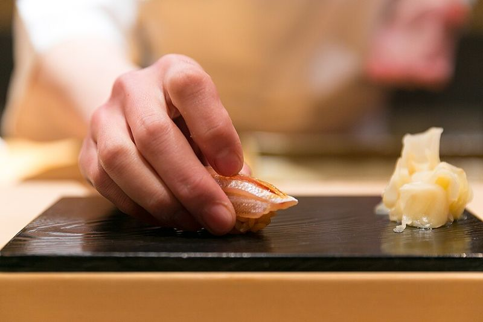
12:00 Sushi-Making Class
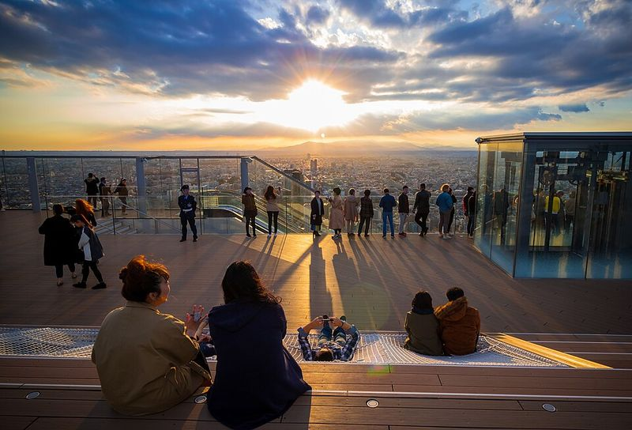
SHIBUYA SKY Rooftop
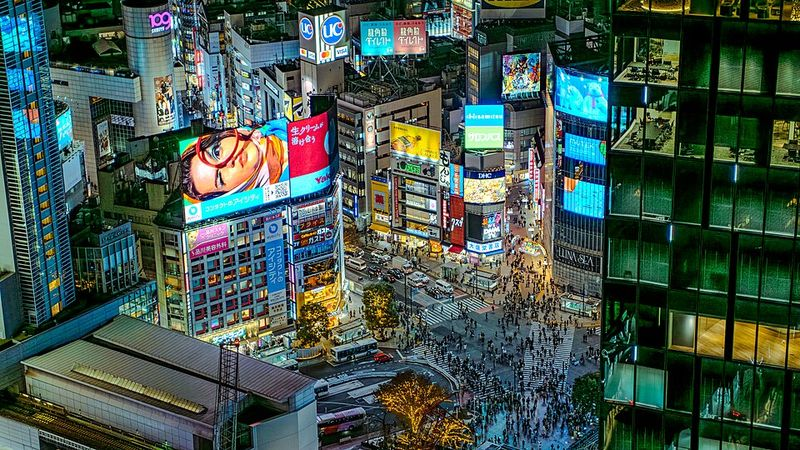
Shibuya Scramble Crossing
Timed Schedule
-
07:15–09:15 🌅 Natural 07:15 Wake-Up + Relaxed Breakfast & Direct Train to Nippori / Nezu ☀️ DaytimeGoogle Maps — type or tap: Nezu Station Tokyo · Nippori Station TokyoEnjoy an unhurried Saturday morning and breakfast at JR Mets Shibuya before riding a single zero-transfer train to Old Tokyo.📋 Required: Tap Suica (¥210 to Nippori).
-
09:30–11:20 🏮 Preserved Old Tokyo ('Yanesen'): Yanaka Ginza Wooden Old Town & Nezu Vermilion Torii Tunnel ☀️ DaytimeGoogle Maps — type or tap: Nezu Shrine 根津神社 · Yanaka Ginza Shopping Street 谷中銀座Browse pre-war wooden merchant storefronts and woodblock crafts in pedestrian Yanaka Ginza (one of the only Tokyo neighborhoods that survived WWII untouched) and walk through Nezu Shrine's winding hillside tunnel of vermilion torii gates over koi ponds (Kyoto Fushimi Inari vibes with zero crowds).📋 Required: Nothing (100% free admission to Nezu Shrine and Yanaka Ginza).
-
12:00–13:20 🍣 ✅ Booked & Confirmed: Hands-On Sushi-Making Class in Asakusa (12:00 PM) ☀️ DaytimeGoogle Maps — what to enter: Viator 217172P1: copy the exact meeting-point address from your voucher into Maps. A generic sushi-class search may send you to the wrong venue.Learn to shape nigiri and temari sushi alongside a local chef and eat your creations as your Saturday sit-down lunch (100% pork-free and alcohol-free).📋 Required: ✅ Already Booked, Paid & Confirmed on Viator for Sat Nov 28 at 12:00 PM (Booking 217172P1 · Ref #1460293249). Show your mobile Viator voucher at 11:50 AM.🍽️ Decided Halal / Seafood Picks (Here): 🐟🥬 Booked Class Is 100% Seafood & Veg! 🌟 Best-Rated Asakusa Spots Nearby (If Still Hungry): Daikokuya Tempura Honten (Tabelog 3.49★ · 1,652 reviews — 1887 sesame-oil prawn tempura), Kaminarimon Sansada (3.48★ · 827 reviews), or Asakusa Sushiken (3.30★ · 108 reviews — 100% Halal sushi counter).
-
14:00–16:15 🛌 2h 15m Hotel Recharge Break at JR-East Hotel Mets Shibuya ☕ Dedicated RestGoogle Maps — type or tap: JR-East Hotel Mets ShibuyaRest your feet and take a power nap in your hotel room across the 2:30 PM jet-lag window before heading up to SHIBUYA SKY.
-
16:40–17:45 🌇 ✅ Booked: SHIBUYA SKY 47-Story Open-Air Rooftop (16:40–17:00 Entry · Dusk Twilight & Night Skyline) 🏮 Sunset & NightGoogle Maps — type or tap: SHIBUYA SKYStep out onto the 360-degree open-air rooftop deck to catch the tail end of orange/pink dusk twilight (civil twilight lasts until ~16:58) and watch the entire Tokyo neon skyline light up at night.📋 Required: ✅ BOOKED & PAID (Sat Nov 28, 16:40–17:00 Entry Slot, 2 Adults). Have your SHIBUYA SKY QR codes + a ¥100 locker coin ready.
-
17:50–20:00 Shibuya Scramble Crossing Neon Walk + Ebisu / Shibuya Dinner (Ramen, Sushi or Wagyu) 🏮 Sunset & NightGoogle Maps — type or tap: Shibuya Scramble Crossing · Halal Ramen Honolu Ebisu · KINKA Sushi Bar Izakaya Shibuya · Umegaoka Sushi no Midori Shibuya Mark City · Gyumon Halal Yakiniku ShibuyaWalk across iconic Shibuya Scramble Crossing under the giant neon video screens, then hop 1 stop (2 minutes) to Ebisu for Tokyo's #1 Halal creamy chicken ramen—or stay right in Shibuya for flame-seared aburi sushi or charcoal Halal A5 Wagyu.📋 Required: Tap Suica (¥150 if riding 1 stop to Ebisu).🍽️ Decided Halal / Seafood Picks (Here): 🍜 ⭐ #1 Halal Ramen Flagship (Ebisu, 2-Min Train) OR 🍣🥩 Right in Shibuya: (1) 🍜 Halal Ramen & Dining Honolu Ebisu Flagship (Tabelog 3.25★ · 107 reviews — rich Halal Tori-Paitan creamy chicken ramen, spicy karaage & gyoza); (2) 🍣 KINKA Sushi Bar Izakaya Shibuya (5-min walk from SHIBUYA SKY, Tabelog 3.46★ · 862 reviews) or Sushi no Midori (Mark City 4F, 3.40★ · 810 reviews); or (3) 🥩 Gyumon Halal Yakiniku Shibuya (3-min walk from JR Mets, 3.10★).
Sun Nov 29
Meiji Jingu, Harajuku, 13:30 Kimono & Tea, Edo Denboin-dori, Asakusa Cafe Rest & 17:30 Sumo
📍 Harajuku & Omotesando (12:25 Subway) → Asakusa (13:30 Kimono & Tea + Denboin-dori + 45-Min Cafe Break) → Shinjuku (17:30 Sumo)
Sleep in until 08:30 AM at JR Mets Shibuya, hop 2 minutes to Meiji Jingu Forest Shrine, graze Takeshita Street crepes and Omotesando before boarding the direct Ginza Line by 12:25 PM to arrive 15 minutes early for your 1:30 PM Maikoya Silk Kimono & Tea Ceremony, stroll Edo wooden Denboin-dori & Senso-ji and change back into your street clothes without rushing (15:00–16:00), and enjoy a 45-minute sit-down cafe break in Asakusa (or visit Rikugien Garden if time permits) before your 5:30 PM Live Sumo Show & Chicken Hot-Pot Dinner in Shinjuku.
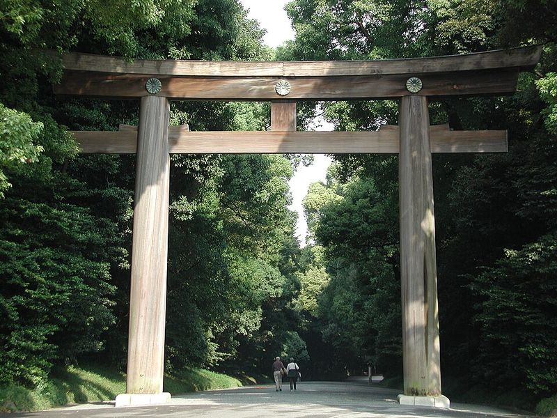
Meiji Jingu Forest Torii
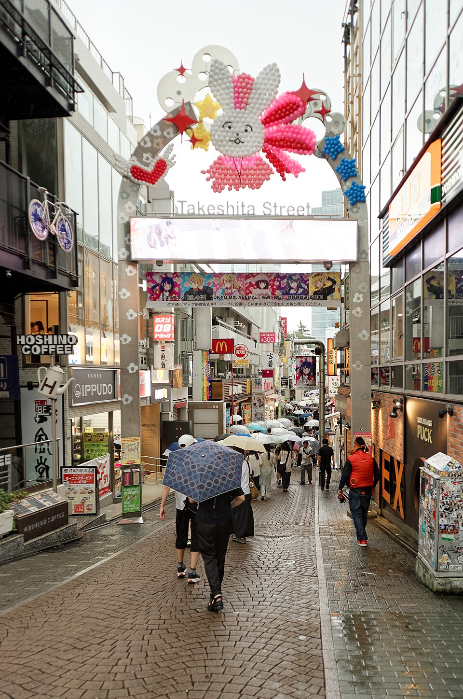
Takeshita Street & Omotesando
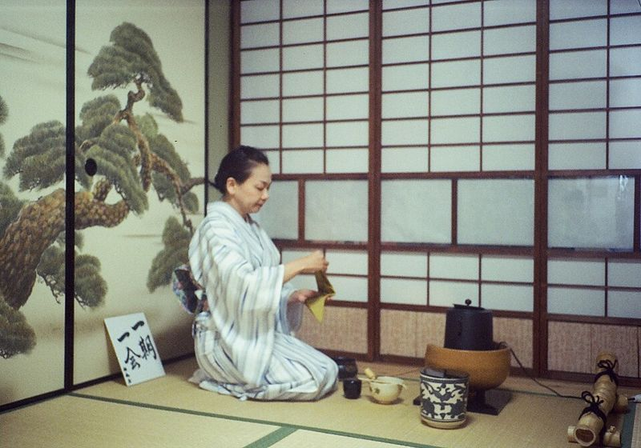
13:30 Kimono & Tea Ceremony
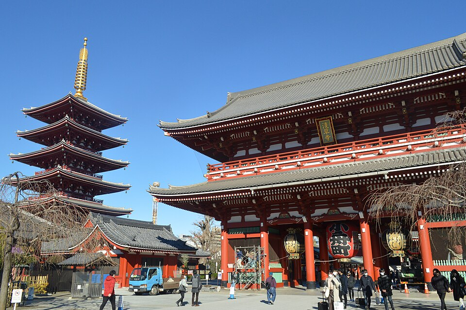
Senso-ji & Denboin-dori (Asakusa)
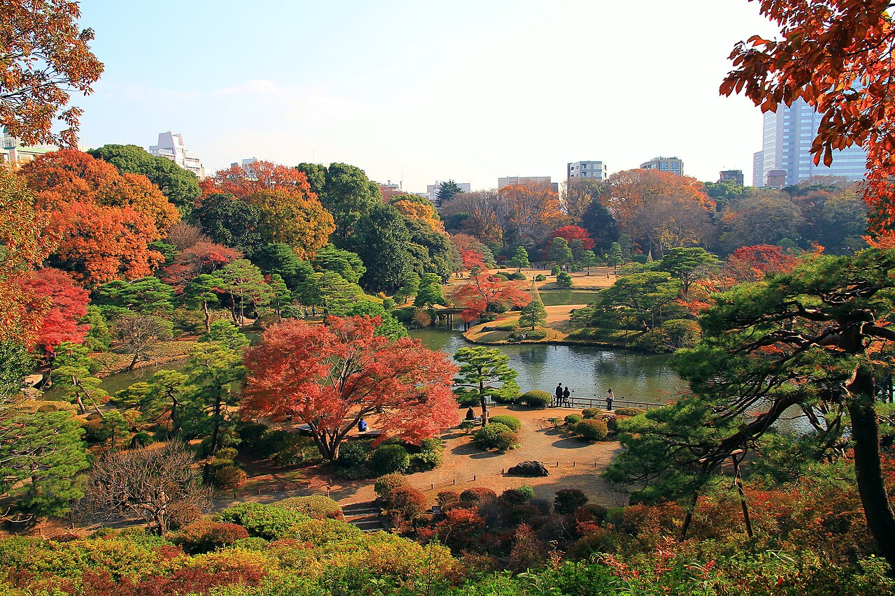
Optional: Rikugien Maples
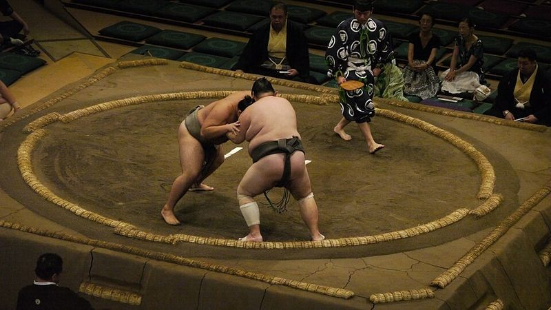
17:30 Live Sumo Show
Timed Schedule
-
08:30–09:50 🌅 Natural 08:30 Wake-Up + Relaxed Coffee at JR Mets & 2-Min Ride to Harajuku ☀️ DaytimeGoogle Maps — type or tap: Harajuku StationEnjoy a slow Sunday morning at JR Mets Shibuya before hopping 1 stop to Harajuku.📋 Required: Tap Suica (¥150 to Harajuku).
-
10:00–11:10 Meiji Jingu Forest Shrine (Shrine #1 of 2) ☀️ DaytimeGoogle Maps — type or tap: Meiji Jingu 明治神宮Walk the peaceful gravel paths under giant cedar torii gates and ceremonial sake barrels inside a 170-acre forest—Sunday morning is also the prime window to spot traditional Shinto wedding processions in the courtyard.📋 Required: Nothing (100% free admission).
-
11:10–12:25 🍓 Takeshita Street Crepes & Omotesando / Cat Street Lunch Graze (Board Ginza Line by 12:25 PM) ☀️ DaytimeGoogle Maps — type or tap: Takeshita Street 原宿竹下通り · Marion Crepes Harajuku · Cat Street Harajuku · Omote-sando StationWalk down colorful Takeshita Street for warm strawberry-custard crepes, then stroll tree-lined Omotesando Boulevard and Cat Street for a casual bite before boarding the 12:25 PM subway to Asakusa.📋 Required: Tap Suica (¥250 on the Ginza Line to Asakusa).🍽️ Decided Halal / Seafood Picks (Here): 🍓 Vegetarian Crepes & ✅ 100% Halal Meat: (1) Marion Crepes / Santa Monica Crepes (Takeshita Street — warm strawberry, banana, custard & whipped cream crepes; skip gelatin cheesecake cubes), (2) THE SLICE Halal Wagyu Steak & Burgers (B1F 5-7-20 Jingumae, right at Omotesando Station), or (3) Halal Wagyu Ramen Shinjuku-tei Harajuku (1-19-24 Jingumae, Opened Nov 2026 on Takeshita St — convenient 100% Halal Wagyu ramen).
-
13:30–15:00 👘🍵 ✅ Booked: Maikoya Asakusa Silk Kimono + Matcha Tea Ceremony (1:30 PM, $105) ☕ Dedicated RestGoogle Maps — type or tap: KIMONO TEA CEREMONY TOKYO MAIKOYA AsakusaFemale staff dress you in silk kimonos inside a women-only dressing area over your base layers (hijab stays completely undisturbed, 13:30–14:00), followed by a 60-minute seated English Matcha Tea Ceremony with traditional wagashi sweets in a tatami room (14:00–15:00). (Prep tip: wear a thin fitted long-sleeve top and leggings).📋 Required: ✅ Already Booked on Viator (Booking 51440P108 · Ref #1460304293 for 1:30 PM, $105). Show your mobile Viator voucher at Maikoya Asakusa (1-12-2 Asakusa) at 13:15.
-
15:00–16:00 🏮 Outdoor Silk Kimono Stroll: Denboin-dori, Nakamise & Senso-ji (Temple #2 of 2) + Unhurried Kimono Return ☀️ DaytimeGoogle Maps — type or tap: Denboin-dori Street Asakusa · Nakamise Shopping Street Asakusa · Sensō-ji 浅草寺 · KIMONO TEA CEREMONY TOKYO MAIKOYA AsakusaKeep your silk kimonos on after tea and step right onto Edo-style Denboin-dori, Nakamise-dori, and 645 AD Senso-ji Temple (15:00–15:40), then head back inside Maikoya with a 20-minute buffer (15:40–16:00) to change back into your street clothes and shoes without rushing.📋 Required: Nothing (return kimonos to Maikoya by 16:00).
-
16:00–16:45 ☕ 45-Min Asakusa Sit-Down Cafe Break & Direct Ride to Shinjuku (🌟 If Time Permits: Rikugien Garden Maples) ☕ Dedicated RestGoogle Maps — type or tap: Asakusa Station Ginza Line · Asakusa matcha cafe near Senso-ji · Rikugien Gardens 六義園Enjoy an unhurried 45-minute sit-down coffee, roasted Hojicha latte, or matcha gelato break in Asakusa to rest your feet after walking in wooden sandals. (🌟 Optional High-Energy Swap: If you change out of kimonos by 15:35 and want extra walking, ride to Komagome for a 40-minute dusk stroll through Rikugien Garden's autumn maples [¥300] before hopping the Yamanote Line to Shinjuku).📋 Required: Tap Suica (¥350 to Shinjuku, or ¥300 walk-up admission if adding Rikugien).🍽️ Decided Halal / Seafood Picks (Here): 🍵 Top-1% Tabelog Matcha & Historic Edo Tempura in Asakusa: (1) Suzukien Asakusa (Tabelog 3.69★ · 1,483 reviews, Sweets Top 100 — 7-level matcha & hojicha gelato), (2) Daikokuya Tempura Honten (3.49★ · 1,652 reviews) or Kaminarimon Sansada (3.48★ · 827 reviews — 1837 sesame-oil prawn tempura), or (3) Asakusa Sushiken (3.30★ · 108 reviews — 100% Halal sushi).
-
17:30–19:15 ✅ Booked: Seated Live Sumo Show & Chicken Hot-Pot Dinner (5:30 PM, Shinjuku) 🏮 Sunset & NightGoogle Maps — what to enter: Viator 5610033P1: copy the exact venue address from your voucher into Maps and select Transit. Do not use a generic sumo-show pin.Watch live sumo demonstrations and matches between former professional wrestlers, learn the rules in English, take a photo in the ring, and eat a warm chicken chanko-nabe hot-pot dinner.📋 Required: ✅ Already Booked on Viator (Booking 5610033P1 · Ref #1460294721 for 5:30 PM). Show your mobile Viator voucher at the Shinjuku venue door at 17:15.🍽️ Decided Halal / Seafood Picks (Here): 🍲 Booked Chicken Chanko-Nabe Dinner (Message Viator 5610033P1 · Ref #1460294721 per Checklist #4 to confirm No-Pork/Muslim-friendly prep!). ✅ Late-Night Shinjuku Backups (<10 Min Walk if Still Hungry): Mazulu Lanzhou Beef Noodles (Tabelog 3.41★ · 115 reviews — 100% Halal hand-pulled beef ramen) or Yakiniku no Mikore Shinjuku (Wagyu BBQ; halal status unverified, serves pork and alcohol).
-
19:30 Onward Return to JR-East Hotel Mets Shibuya & Pack 1-Night Backpack for Hakone 🏮 Sunset & NightGoogle Maps — type or tap: JR-East Hotel Mets ShibuyaRide the 7-minute Yamanote Line train back to JR Mets Shibuya and pack 1 change of clothes + phone chargers into a single small backpack for Monday's overnight in Hakone (Mizunoto Ryokan provides yukata pajamas, towels, toothbrushes, skincare, shampoo, and hairdryers—so leave everything else zipped inside your two large suitcases!).
Mon Nov 30
Hakone Mountain Train, Volcanic Gondola, Lake Ashi Ship, Cedar Trail & Mizunoto Ryokan
📍 JR Mets Shibuya Check-Out (08:30) → Hakone Golden Loop → Kowakidani Onsen (Mizunoto)
Wake at 07:30 AM for a 60-minute morning routine at JR-East Hotel Mets Shibuya, hop in a 4-minute ($6) taxi at 08:30 AM to drop your two large suitcases free at lyf Shibuya while carrying only your light 1-night backpack, ride the booked 10:00 AM Romancecar to Hakone-Yumoto, and complete the classic Hakone Golden Loop to check into Mizunoto by 16:00.
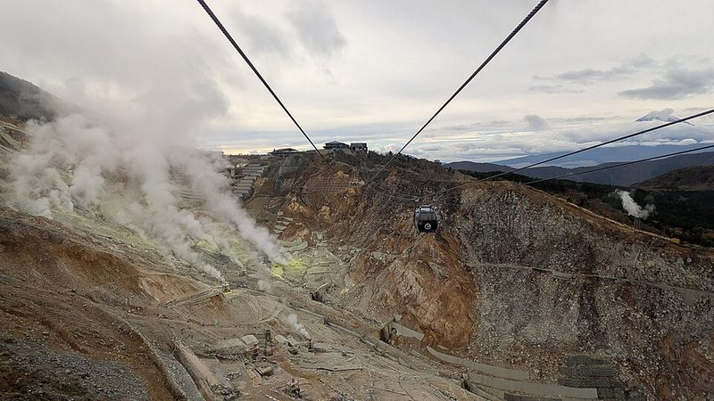
Hakone Ropeway Gondola
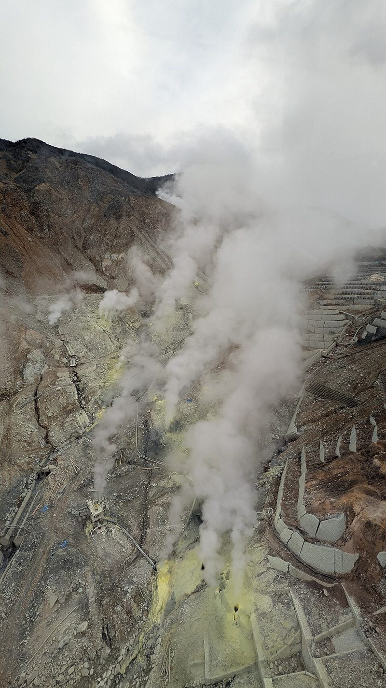
Owakudani Volcanic Valley
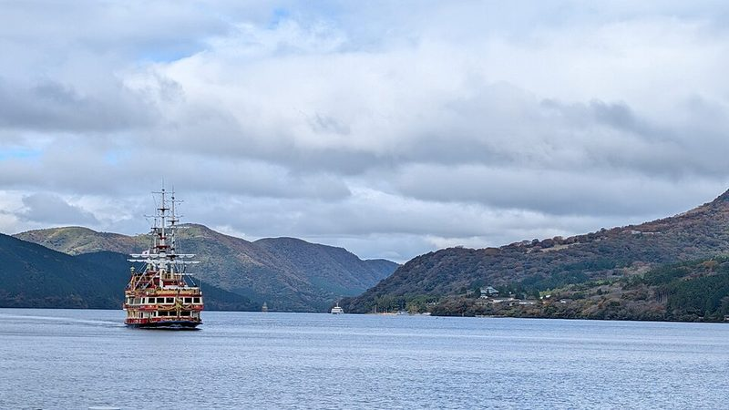
Lake Ashi Sightseeing Ship
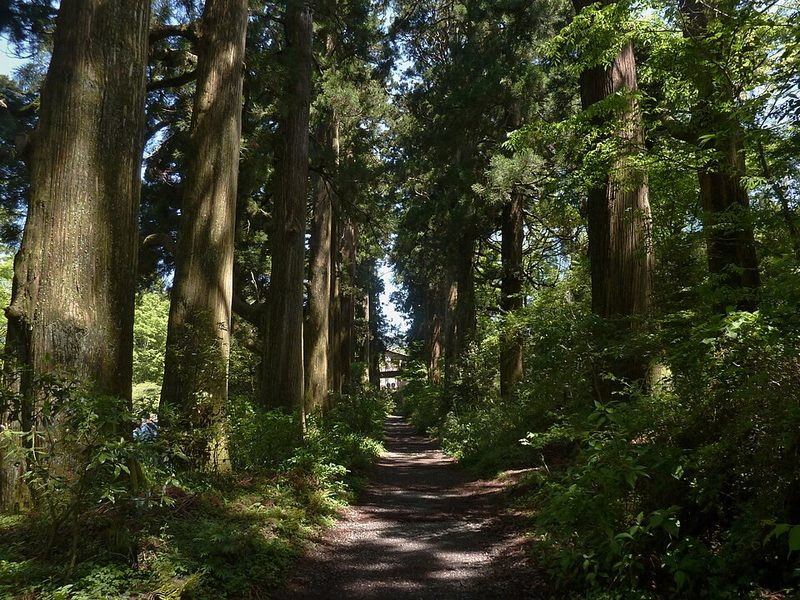
Old Tokaido Cedar Trail
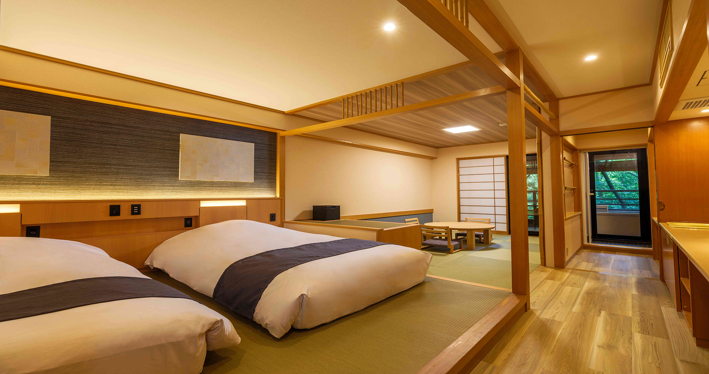
Mizunoto Suikanosho Room
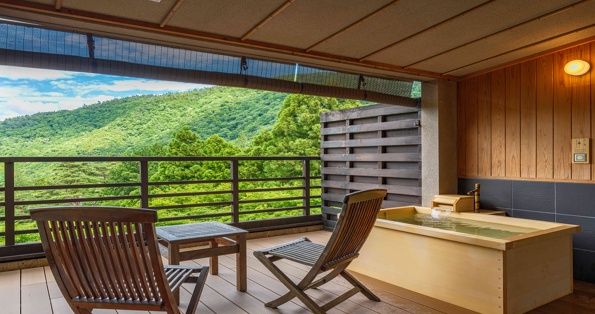
Mizunoto Hinoki Balcony Bath
Timed Schedule
-
07:30–08:30 🌅 Natural 07:30 Wake-Up, Check-Out of JR Mets Shibuya & 08:30 4-Min ($6) GO Taxi Suitcase Drop at lyf Shibuya ☀️ DaytimeGoogle Maps — type or tap: lyf Shibuya TokyoEnjoy a calm 60-minute morning routine from 07:30–08:30, check out of JR Mets Shibuya with your two large suitcases and light 1-night backpack, and drop your large suitcases free at lyf Shibuya on your way to Shinjuku.📋 Required: Show your Dec 1 lyf Shibuya Priceline confirmation at lyf's 2F desk for free bag storage, and tap Suica (¥170) to Shinjuku.
-
10:00–11:27 Leg 0 — Odakyu Romancecar 'Hakone 3 (GSE)' Panoramic Express (Shinjuku → Hakone-Yumoto · Car 03, Seats 9C & 9D) ☀️ DaytimeGoogle Maps — type or tap: Odakyu Shinjuku Station · Hakone-Yumoto StationRelax in your reserved right-side panoramic window seats (Carriage 03, Seats 9C & 9D — Mt. Fuji view side) on Odakyu's flagship red GSE express train from Shinjuku straight to Hakone-Yumoto Station (zero train transfers).📋 Required: ✅ BOOKED (Booking #00058 + EMot 2-Day Group Freepass). Keep your e-Romancecar confirmation email/screenshot (Booking #00058) AND physical credit card ending in 9554 with you on board.
-
11:35–12:25 Leg 1 — Hakone Tozan Mountain Switchback Train & Cable Car (Hakone-Yumoto → Gora → Sounzan) ☀️ DaytimeGoogle Maps — type or tap: Gora Station Hakone · Sounzan Station HakoneWalk straight across the same platform at Hakone-Yumoto Station to board the scenic mountain train as it zig-zags up three switchbacks through the forest to Gora (40 mins, departs every 15–20 mins), then hop onto the funicular Cable Car up to Sounzan (10 mins).📋 Required: 100% covered by your 2-Day Hakone Freepass (scan your live Freepass QR at the gate).
-
12:30–13:20 Leg 2 — Hakone Ropeway Over Owakudani Volcanic Valley (+ 25-Min Summit Break) ☀️ DaytimeGoogle Maps — type or tap: Owakudani Station Hakone · Togendai Station HakoneBoard the aerial gondola (cabins arrive continuously every 60 seconds) and soar 130 meters above steaming sulfur vents with views of Mt. Fuji. Step off at Owakudani summit station for 25 minutes to see the volcanic crater and try the famous black hot-spring eggs, then continue down to Togendai Port.📋 Required: 100% covered by your 2-Day Hakone Freepass (bring ¥500 cash for a bag of 5 black volcanic eggs).
-
13:30–14:05 Leg 3 — Lake Ashi Sightseeing Pirate Ship Cruise (Togendai → Moto-Hakone, 35 min) ☀️ DaytimeGoogle Maps — type or tap: Togendai Port Hakone Sightseeing Cruise · Moto-Hakone Port 元箱根港Walk straight from the Togendai ropeway terminal onto the Lake Ashi Sightseeing Ship (departs every 30–40 mins) for a 35-minute cruise across volcanic Lake Ashi past the red lakeside torii gate of Hakone Shrine.📋 Required: 100% covered by your 2-Day Hakone Freepass (scan your Freepass QR at the pier).
-
14:10–15:35 ☕ Moto-Hakone Lunch & Old Tokaido 400-Year Cedar Trail ☕ Dedicated RestGoogle Maps — type or tap: Old Tokaido Cedar Avenue Hakone 箱根旧街道杉並木 · Narukawa Art Museum · Bakery & Table HakoneSit down along the Lake Ashi waterfront at Bakery & Table Hakone or a lakeside soba cafe, then walk a flat, peaceful stretch of the ancient stone highway under towering 400-year-old cedars. 🌟 Optional Cold/Cloudy Backup (1 Min Across from Pier): Narukawa Art Museum Panorama Lounge overlooking Lake Ashi's red torii gate and Mt. Fuji (¥1,300 w/ Freepass).📋 Required: Walk-in cafes and free cedar trail (show your No-Pork Chef Card).🍽️ Decided Halal / Seafood Picks (Here): 🐟🥬 Elite Tabelog Gems by Lake Ashi & Old Tokaido Cedar Trail: (1) Bakery & Table Hakone (Tabelog 3.59★ · 1,276 reviews, Bread Top 100 — waterfront footbath bakery at Moto-Hakone Pier; pick egg, cheese & veggie pastries), (2) Amazake Chaya (3.67★ · 866 reviews — 400-year-old thatched Edo teahouse right on your Cedar Trail serving charcoal-grilled Chikara Mochi rice cakes & non-alcoholic hot Amazake!), and (3) Hatsuhana Soba Honten (3.49★ · 2,290 reviews — 1934 mountain-yam & prawn tempura soba).
-
15:40–16:00 Leg 4 & Check-In — H-Line Bus (18 min) to ✅ Booked Mizunoto Ryokan (Private Hinoki Balcony Bath) 🏮 Sunset & NightGoogle Maps — type or tap: Hakone Kowakudani Onsen Mizunoto · Kowakidani Station HakoneSoak anytime in your 35 m² Suikanosho room's golden Hinoki cypress tub on the balcony, try the 3 free outdoor maple-garden private hot-spring huts (no reservation needed—just flip the wooden sign on the door), step out 3–5 minutes to Gora for dinner, and enjoy complimentary post-bath ice pops and 22:30 Yonaki Soba ramen. 🌟 Optional Weather Backup (1 Stop from Kowakidani): Hakone Open-Air Museum (Chokoku-no-Mori Station, open 09:00–17:00, ¥1,900 w/ Freepass).📋 Required: ✅ Already Booked on Priceline ($380 with tax, Room-Only). Present both physical passports at check-in (¥150 per person local hot-spring bath tax paid at the desk).🍽️ Decided Halal / Seafood Picks (Here): 🐟🥬 4 Top-Rated Dinner Spots 3–5 Mins from Mizunoto (Room-Only Booking): (1) Itoh Dining by Nobu Gora (Tabelog 3.57★ · 266 reviews, open till 20:30 — Chef Nobu Matsuhisa collaboration; lobster/scallop & A5 Wagyu teppanyaki), (2) Gora Brewery & Grill (3.50★ · 185 reviews, open till 20:30 — also by Chef Nobu; wood-fired seafood, sushi rolls & tempura), (3) Tamura Ginkatsutei Honten Gora (3.49★ · 1,479 reviews — famous clay-pot Tofu Katsu-ni & prawn cutlets; closes 19:00), or (4) Iroriya Miyanoshita (3.48★ · 284 reviews — Abalone Rice Bowls & Ashigara beef), plus Kowakidani Lawson / 7-Eleven for balcony snacks.
Tue Dec 1
11:14 Kodama 808 Bullet Train, Tokyo Station / Ginza Lunch, 13:30 Samurai Museum, Kappabashi & Shibuya Free Time
📍 Mizunoto (09:00 Check-Out) → 11:14 Odawara Bullet Train → Tokyo Station / Ginza Lunch → 12-Min Taxi to Asakusa Samurai & Kappabashi → lyf Shibuya Free Time
Enjoy a morning Hinoki balcony hot-spring soak at Mizunoto and check out at 09:00 AM to ride the mountain train down to Odawara Station by ~10:30 AM. Board your booked 11:14 AM Kodama 808 Shinkansen Bullet Train (Res #2000 · Car 12, Seats 12-D & 12-E · ¥6,820 paid) for the 34-minute nonstop run to Tokyo Station (11:48 AM), eat crispy Halal prawn tempura at Ginza Itsuki (or ramen at Tokyo Ramen Street), hop in a 12-minute ($14) taxi at 12:55 PM straight to your booked 1:30 PM Samurai & Ninja Museum tour (51440P80) in Asakusa, walk 6 minutes to Kappabashi Knife Street, then enjoy flexible afternoon free time around 4-star lyf Shibuya before your Unagi / Halal Wagyu finale dinner.
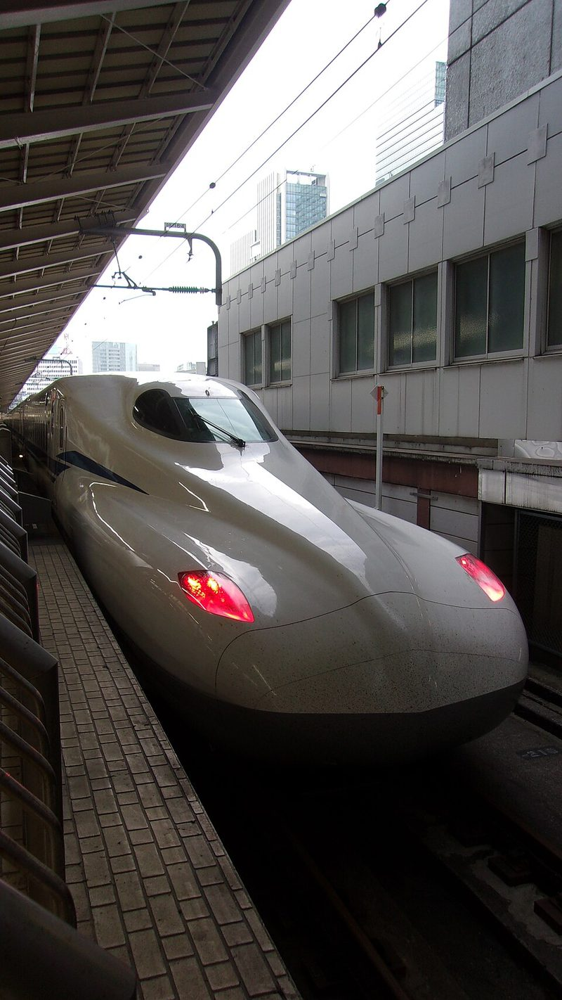
11:14 Kodama 808 Shinkansen
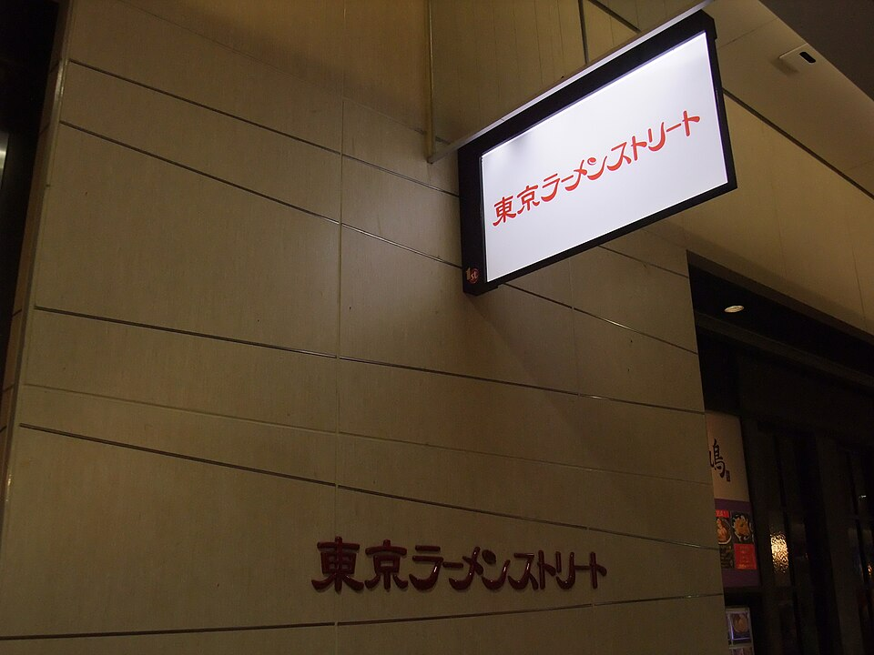
Tokyo Station Ramen Street
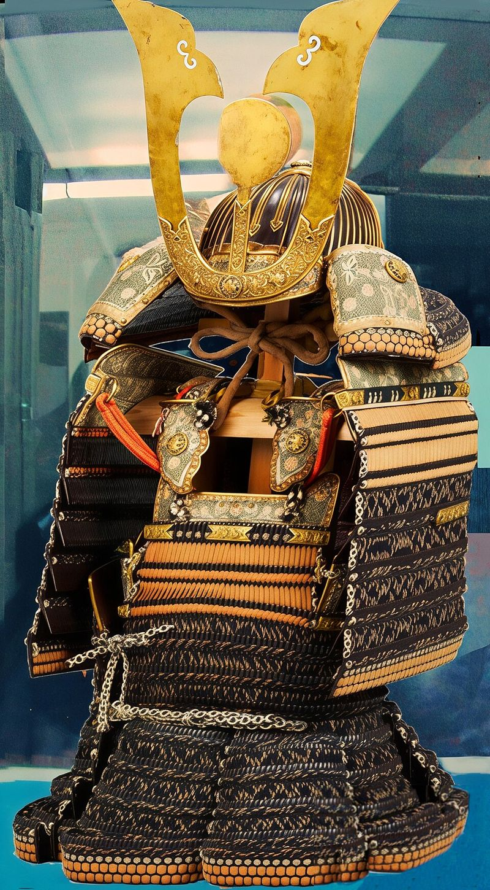
13:30 Samurai & Ninja Museum
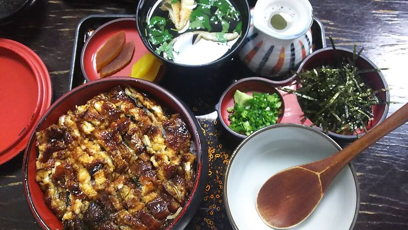
Charcoal-Grilled Unagi (Eel)
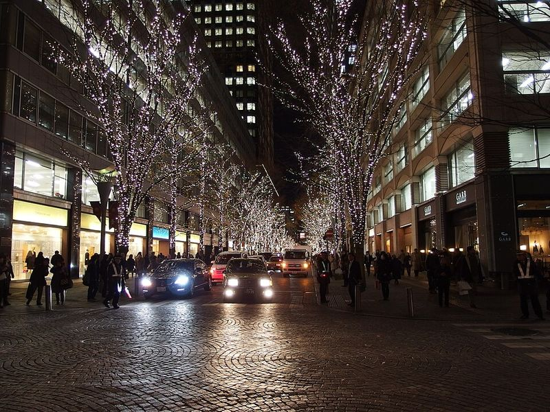
Winter Holiday Illuminations
Timed Schedule
-
07:45–10:30 🌅 Morning Balcony Onsen Soak at Mizunoto & 09:00 Check-Out Down the Mountain to Odawara Station ☀️ DaytimeGoogle Maps — type or tap: Odawara StationEnjoy one last morning soak in your private Hinoki balcony hot-spring tub (plus free probiotic drinks in the lounge), then check out at 09:00 AM to reach Odawara Station by ~10:30 AM with a 44-minute buffer for coffee and snacks before your 11:14 bullet train.📋 Required: Covered by Day 2 of your 2-Day Hakone Freepass.
-
11:14–11:48 🚄 ✅ Booked: Tokaido Shinkansen 'Kodama 808' Bullet Train (Dep 11:14 AM Odawara → Arr 11:48 AM Tokyo · Car 12, Seats 12-D & 12-E · Res #2000) ☀️ DaytimeGoogle Maps — type or tap: Odawara Station Shinkansen · Tokyo StationGlide at 175 mph on Japan's Series N700 Shinkansen bullet train from Odawara nonstop to Tokyo Station in 34 minutes in your reserved Mt. Fuji-side 2-seat pair (Car 12, Row 12, Seats 12-D & 12-E). (💡 Optional $0 Earlier-Train Bonus: If you reach Odawara by 10:25 AM, you can tap 'Change' in smart-ex.jp to move to the ~10:40 AM Shinkansen for ¥0 free).📋 Required: ✅ BOOKED, PAID & SEATS LOCKED on Smart EX: Train = Kodama 808 (Ordinary Car Reserved) · Date = Tue Dec 1, 2026 · Departure = 11:14 AM Odawara → Arrival = 11:48 AM Tokyo Station · Seats = Car 12, Row 12, Seats 12-D & 12-E · Booking Ref = Smart EX Reservation #2000 · Fare = ¥6,820 Total (2 Adults, paid on Visa ending in 9554).
-
11:55–13:10 🍤🍜 Tokyo Station / Ginza Lunch (Halal Tendon Ginza Itsuki 3.47★ OR Soranoiro NIPPON 3.70★) + 12:55 12-Min ($14) Taxi to Samurai Museum ☀️ DaytimeGoogle Maps — type or tap: Halal Tendon Ginza Itsuki · Soranoiro NIPPON Tokyo Station · SAMURAI NINJA MUSEUM Asakusa TokyoEnjoy crispy 100% Halal giant-prawn tempura over rice in Ginza or Michelin-featured ramen inside Tokyo Station, then hop in a 12-minute taxi at 12:55 PM straight to the Samurai & Ninja Museum door by 13:10.📋 Required: Walk-in lunch + ~¥2,100 ($14) taxi at 12:55 PM.🍽️ Decided Halal / Seafood Picks (Here): 🍤 ⭐ #1 Dish-First Pick (100% Halal Tempura Bowl): Halal Tendon Ginza Itsuki (Ginza INZ 1, 8-min walk from Tokyo Station, Tabelog 3.47★ · 522 reviews — Tokyo's top-rated 100% Halal spot, famous for crispy giant prawn, chicken & soft-boiled egg tendon w/ free chawanmushi & miso soup!). 🍜 Inside-Station Ramen Alternative: Soranoiro NIPPON (Tokyo Ramen Street under Yaesu Taxi Stand, Tabelog 3.70★ · 3,732 reviews — Clam/Mushroom Soy Ramen or Vegan Veggie Soba).
-
13:30–14:30 ✅ Booked: Samurai & Ninja Museum Guided Tour in Asakusa (1:30 PM, $45) ☀️ DaytimeGoogle Maps — type or tap: SAMURAI NINJA MUSEUM Asakusa TokyoJoin your 60-minute interactive English tour with samurai armor and helmet try-on, replica katana sword photos, and real metal ninja star (shuriken) target practice. (🎒 Leave your small 1-night Hakone backpack behind the museum reception desk during your tour so you walk hands-free).📋 Required: ✅ Already Booked on Viator (Booking 51440P80 · Ref #1460302975 for 1:30 PM, $45). Show your mobile Viator voucher at 13:10–13:15.
-
14:35–15:35 🔪 Kappabashi Knife & Kitchen Town (6-Min Walk from Samurai Museum) ☀️ DaytimeGoogle Maps — type or tap: Kappabashi Dougu Street かっぱ橋道具街Walk 6 minutes west to Tokyo's century-old culinary street to watch master smiths at Kama-Asa or Tsubaya hand-engrave your name in Kanji onto a Japanese chef's knife ($50–$95 tax-free—ready in 10 minutes to pack into your checked suitcases at lyf Shibuya tonight!), browse ultra-realistic plastic food-sample (Sampuru) shops, and pick up $3–$12 ceramic ramen/matcha bowls at Dengama.📋 Required: Free entry (for ¥5,000+ pre-tax take-home knives/ceramics, show your physical passport or Visit Japan Web Tax-Free QR at checkout—pack any knife inside your checked suitcase at lyf Shibuya, never carry-on!).
-
15:35–18:15 🏨 Check In at lyf Shibuya Tokyo + Flexible Afternoon Free Time (Shibuya Walk-Ins or Akihabara Stop-Off) ☕ Dedicated RestGoogle Maps — type or tap: lyf Shibuya Tokyo · Akihabara StationCheck into lyf Shibuya Tokyo (4-3 Udagawacho, opposite PARCO) where your two large suitcases are waiting, then enjoy 2+ unscheduled hours to rest OR pick one fun option: (A) En-Route Stop-Off (0 Extra Transfers): hop off the Ginza Line at Suehirocho (2 stops from Kappabashi) for 45 mins in Akihabara's retro-game/Gachapon arcades or Halal A5 Wagyu at PANGA; OR (B) Zero-Commute Walk-Ins Right Outside lyf Shibuya: Shibuya PARCO 6F (Nintendo TOKYO & Pokémon Center, 1 min across the street), Cat Street indie cafes (6 mins), Miyashita Park rooftop (5 mins), Mega Don Quijote (4 mins), or Kaitenzushi conveyor-belt sushi.📋 Required: ✅ Hotel Already Booked on Priceline ($194 with tax for Dec 1–2).🍽️ Decided Halal / Seafood Picks (Here): 🥩 ⭐ Target Dish — Real Japanese A5 Wagyu #3 (En Route From Kappabashi): (1) 🥩 Halal Wagyu Yakiniku PANGA (Shin-Okachimachi/Ueno, 2 stops from Kappabashi on your Ginza Line path, Tabelog 3.32★ · 76 reviews — Tokyo's #1 Tabelog-rated dedicated Halal Yakiniku serving whole-cattle A5 Satsuma Black Wagyu!), (2) 🍜 Ayam-Ya Okachimachi (3.09★ — Michelin-featured Halal chicken ramen near PANGA), or (3) 🍛 CoCo Ichibanya Halal Akihabara (3.21★ · 196 reviews).
-
18:30–20:30 Shibuya Charcoal-Grilled Unagi (Eel) Finale Dinner & Omotesando / Miyashita Park Holiday Illuminations 🏮 Sunset & NightGoogle Maps — type or tap: Hitsumabushi Nagoya Bincho Shibuya · Omotesando Illumination · Miyashita Park ShibuyaStay right in your Shibuya / Omotesando neighborhood with zero cross-town backtracking! Celebrate your final night in Tokyo with charcoal-grilled unagi (freshwater eel) over steamed rice, flame-seared sushi 1 minute from your hotel, or Halal A5 Wagyu, followed by an evening stroll beneath the winter lights along Miyashita Park and tree-lined Omotesando Boulevard.📋 Required: Nothing (show your No-Pork / No-Alcohol Chef Card when ordering).🍽️ Decided Halal / Seafood Picks (Here): 🐟🥬 Top-Rated Shibuya Unagi (Eel), 🍣 Sushi (1 Min from lyf!) OR ✅ Halal Wagyu: (1) 🍱 Hanabishi Unagi Shibuya (Dogenzaka, 6-min walk from lyf, Tabelog 3.52★ · 232 reviews — plump domestic charcoal-grilled eel over rice) or Ganso Unatetsu Shibuya (beside Mark City, 3.47★ · 420 reviews); (2) 🍣 KINKA Sushi Bar Izakaya Shibuya (1-min walk right across from lyf, 3.46★ · 862 reviews — flame-seared aburi sushi & Buri-don!) or Sushi no Midori (Mark City 4F, 3.40★ · 810 reviews); or (3) 🥩 Gyumon Halal Yakiniku Shibuya (3.10★ · 70 reviews).
Wed Dec 2
Sleep In, Isetan Depachika Food Hall, Shinjuku Gyoen Maple Picnic & 2:00 PM Private Transfer to Haneda
📍 lyf Shibuya (10:15 Check-Out & Free Bag Hold) → Isetan Depachika → Shinjuku Gyoen Picnic → 13:20 Back at lyf for 2:00 PM Private Transfer
Sleep in until 09:00 AM on your final morning, check out of lyf Shibuya at 10:15 AM and leave your heavy suitcases at the 24-hour front desk for free, ride hands-free to Shinjuku to pick up gourmet bento, tempura, fruit daifuku, and edible gifts at Isetan's famous basement food hall (10:50–11:25), walk 5 minutes into Shinjuku Gyoen National Garden for a 70-minute park-bench picnic under the crimson late-autumn maples (11:30–12:40), and return to lyf Shibuya by 13:20—giving you a 40-minute hotel buffer for bathrooms and repacking souvenir boxes before your 2:00 PM Agoda Private Transfer ($55) to Haneda Terminal 3.
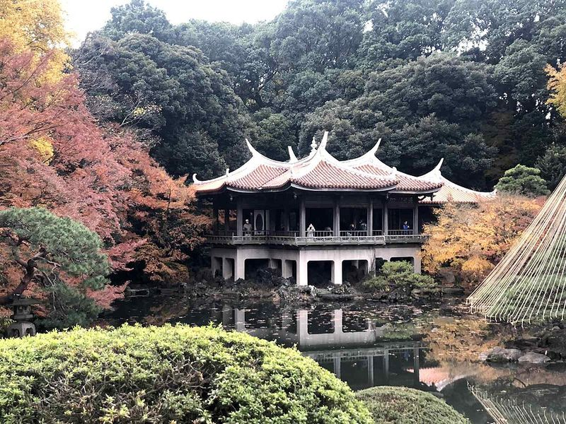
Shinjuku Gyoen Pavilion
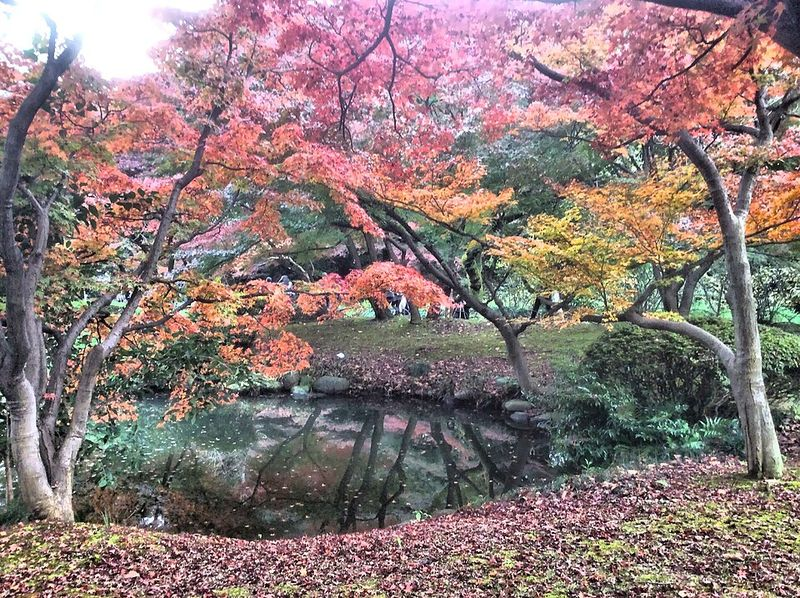
Shinjuku Gyoen Autumn Maples
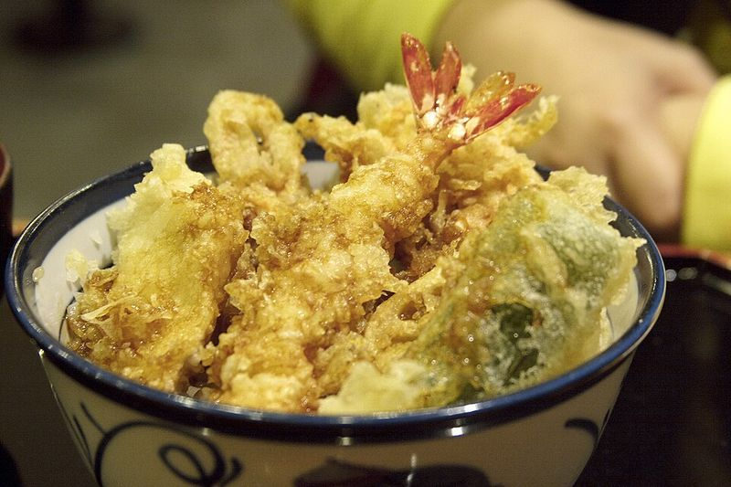
Tempura & Depachika Food Hall
Timed Schedule
-
09:00–10:15 🌅 Sleep In Until 09:00 AM, 10:15 Check-Out at lyf Shibuya & Free Front-Desk Bag Hold ☀️ DaytimeGoogle Maps — type or tap: lyf Shibuya TokyoEnjoy a slow final morning, check out at 10:15 AM (ahead of the 11:00 AM deadline), and leave your suitcases stored free at the lyf Shibuya 2F front desk before riding 7 minutes hands-free to Shinjuku. (💡 Optional — Only If You Bought $35+ Tax-Free Take-Home Goods: confirm your credit card payout is saved in Visit Japan Web → 'Refund Procedure').📋 Required: Tap Suica (¥170 to Shinjuku).
-
10:50–11:25 🍱 Isetan Shinjuku 'Depachika' Underground Food Hall (Grab Picnic Lunch & Souvenir Sweets First) ☀️ DaytimeGoogle Maps — type or tap: Isetan ShinjukuBrowse Tokyo's most famous department-store basement food hall (B1F, opens 10:00 AM) for freshly fried shrimp/vegetable tempura, grilled salmon bento, strawberry daifuku mochi, and boxed matcha cookies for home, then walk 5 minutes east to Shinjuku Gyoen.📋 Required: Free entry (picnic items eaten today are normal taxed purchases; tax-free only applies to ¥5,000+ / ~$35+ unopened gifts taken home to the US).🍽️ Decided Halal / Seafood Picks (Here): 🐟🥬 Picnic OR ✅ 100% Halal Sit-Down Right Outside Isetan: (1) Isetan Depachika Basement Food Hall (Tenichi freshly fried prawn/squid/lotus-root tempura, grilled salmon obento, red-salmon onigiri & strawberry daifuku), OR (2) Halal Wagyu Ramen Shinjuku-tei Shinjuku (3-11-6 Shinjuku — 2-minute walk on the exact block between Isetan and Shinjuku Gyoen Gate, opens 11:00 AM!).
-
11:30–12:40 🍁 Shinjuku Gyoen National Garden (70-Min Late-Autumn Maple Stroll & Park-Bench Picnic) ☀️ DaytimeGoogle Maps — type or tap: Shinjuku Gyoen Shinjuku Gate 新宿御苑 新宿門Carry your Isetan lunch into Shinjuku Gyoen for a peaceful 70-minute picnic and flat stroll across traditional pond bridges, tea pavilions, and bright red late-November Japanese maples.📋 Required: No advance booking—tap your Apple Wallet Suica (¥500 per adult) at the Shinjuku Gate turnstile.
-
12:40–13:20 🚃 Head Back to lyf Shibuya (Arrives 13:20 — Full 40-Min Bathroom & Repacking Buffer Before 2:00 PM Pickup) ☀️ DaytimeGoogle Maps — type or tap: lyf Shibuya TokyoWalk out of Shinjuku Gyoen at 12:40 PM and ride the JR Yamanote Line back to Shibuya, arriving inside lyf Shibuya by 13:20 so both of you have 40 relaxed minutes to use the restroom, pack your Isetan souvenir boxes into your suitcases, and meet your driver.📋 Required: Tap Suica (¥170).
-
14:00 🚕 ✅ Booked: 2:00 PM Agoda Private Airport Transfer (lyf Shibuya → Haneda Terminal 3 for 16:50 Flight) ☀️ DaytimeGoogle Maps — type or tap: Haneda Airport Terminal 3Meet your pre-booked Agoda private transfer driver at the front door of lyf Shibuya Tokyo at 2:00 PM (14:00) for a door-to-door ride to Haneda Terminal 3 Departures by ~2:45 PM (~65 minutes before the 3:50 PM Delta bag-drop lock for your 16:50 flight). (💡 Only If You Bought Tax-Free Take-Home Goods: connect to 'Customs_WiFi_For_TaxRefund' [PW: 'jcustoms'] and tap 'Confirm' in Visit Japan Web before checking your bags).📋 Required: ✅ Booked, Paid & 2:00 PM Pickup Confirmed on Agoda ($55 Private Airport Transfer, lyf Shibuya Tokyo → Haneda Terminal 3, 2 Adults). Check in on the Fly Delta app 24 hours before departure.🍽️ Decided Halal / Seafood Picks (Here): ✅ Top-Rated at Haneda Terminal 3 (2:45–3:45 PM, 4F Edo Koji Before Security): (1) Mrs. Istanbul Haneda (Tabelog 3.46★ · 383 reviews — 100% Halal-certified Turkish doner & shish kebab plates, rice & baklava), and (2) Ariso Sushi Haneda T3 Edo Koji (Tabelog 3.45★ · 315 reviews — right next door; fresh Toyosu Market seafood nigiri).